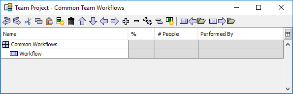

In the next step of the project launch process, the team typically formalizes the steps in their development process. To do this, you may draw upon existing organizational processes, or you may define new processes as a team during the launch. The team may create defined processes, or they may simply identify common, repeatable workflows. The Process Dashboard provides tools that assist with this task.
If your team is defining new processes from scratch, it is often a good idea to use a whiteboard, easel, and other traditional meeting aids to capture the team's ideas, as this helps to promote the free flow of ideas. When the team processes begin to solidify, it is helpful to have an individual enter these into the dashboard. (On the other hand, if your process definitions take a long time to solidify, it may be more helpful to wait until after the meeting is over to enter the process steps into the dashboard.)
Processes and workflows are entered into the Common Team Workflows Editor. From the Work Breakdown Structure Editor window, you can access the Common Team Workflows Editor by selecting the Workflow menu and choosing Edit Workflows.

Processes and workflows are once again displayed hierarchically and
edited in an outline format. (For more in-depth information on editing
this outline, see the Editing the Work
Breakdown Structure help topic.) In this hierarchical outline,
each item that is a direct child of the Common Workflows node
represents a single process or workflow. These items
are displayed with an icon depicting a structured bundle ( ). You
can designate a given node as a process or workflow by un-indenting it
as far to the left as possible.
). You
can designate a given node as a process or workflow by un-indenting it
as far to the left as possible.
Define the steps in a process or workflow by creating items hierarchically underneath it. Underneath a process or workflow, you can define documents that will be created and tasks that will be performed. To define the type of each item you create, click on its icon to display a menu. When defining a high-maturity process, make certain to select the most appropriate process phase for each task you create.
You are not limited in the number of processes/workflows you can create. Each process/workflow, however, should be given a unique name.
The four columns on the right are completely optional, but entering data can save you a great deal of time later.
An example can illustrate this best. Imagine a hypothetical organizational process for crisis management. The phases in this process are named Planning, Stop, Drop, Roll, and Postmortem. Historical data indicates that an individual enacting the process can address three crises per hour. Furthermore, the data indicates that the phases take 5%, 10%, 10%, 40%, and 35% of the total time, respectively. Then the correct way to capture the process would be as follows:

It is worth noting, however, that the % column is strictly provided for convenience. In particular, there is no requirement that percentages must add to 100. If you do not need to use the percentage column to capture your productivity historical data, you can leave it at the default value of 100%.
It is worth noting that this column is completely independent of the previous three columns. Thus, if you know that your team historically spends 15% of a project in code review, but five people are typically involved in that review, you would observe that each person is actually spending 3% of the overall time. In this case, 3 would be the correct value to put in the % column.
There is not a Save button on the Common Team Workflows Editor. Instead, workflow definitions are automatically saved when you save the main work breakdown structure. To save, switch back to the main Work Breakdown Structure Editor window and select Save from the File menu.
Two buttons on the toolbar provide the ability to import ( ) and
export (
) and
export ( ) workflows. This makes it
possible to share workflows between projects and between project
teams. When you click one of these buttons, the workflow editor will
ask you to identify the name of a workflow library file. You can
export workflows to a new or existing library file, or import
workflows from an existing file. After choosing a file, the
Import/Export Team Workflows window will appear. This window shows the
workflows from the current project in a table on the left, and the
workflows from the library in a table on the right.
) workflows. This makes it
possible to share workflows between projects and between project
teams. When you click one of these buttons, the workflow editor will
ask you to identify the name of a workflow library file. You can
export workflows to a new or existing library file, or import
workflows from an existing file. After choosing a file, the
Import/Export Team Workflows window will appear. This window shows the
workflows from the current project in a table on the left, and the
workflows from the library in a table on the right.

When exporting, you can select a workflow in the table on the left and click the Add button to export it to the library on the right. When importing, you can select a workflow in the library table on the right and click the Add button to import it to the project workflows on the left.

Workflows are identified by their names (for example, "Crisis Management" in the image below). If you import or export a workflow which has the same name as an existing workflow in the destination table, the existing workflow will be overwritten. For example, in the image below, the user is importing workflows from an existing library. They have selected the "Crisis Management" workflow in the library on the right. Since there is already a workflow by that name in the project workflow list on the left, the application has automatically highlighted it, and changed the text on the Add button to "Overwrite," indicating that if this workflow is imported it will overwrite the workflow that is highlighted on the left.

At times, you may wish to import all the workflows in a library, or export all of the workflows in your project. The Add All button will perform this task. Keep in mind that any existing workflows with the same names will be overwritten, as described in the paragraph above.
The changes you make in the Import/Export Team Workflows window will not be saved until you click the Import or Export button at the bottom of the window. (Only one of these buttons will appear, depending on whether you chose to import workflows or export workflows.) When you click the Export button, the changes you made to the workflow library will be saved to the named file. When you click the Import button, the changes you made to the project workflows will be applied to the contents of the Common Team Workflows Editor. When importing or exporting, if you make a mistake or change your mind, just click the Cancel button and no changes will be saved.